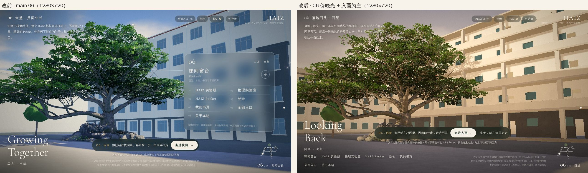
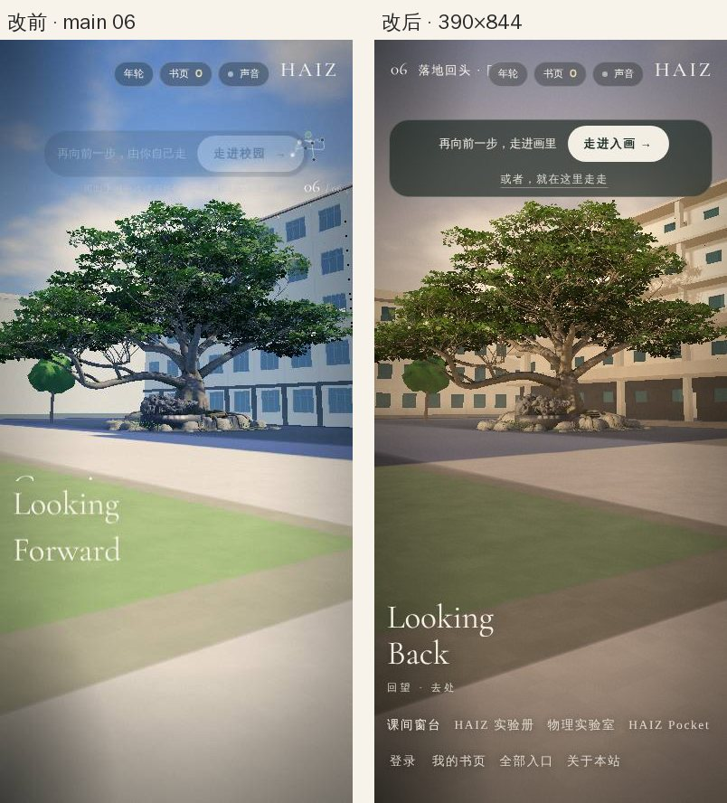
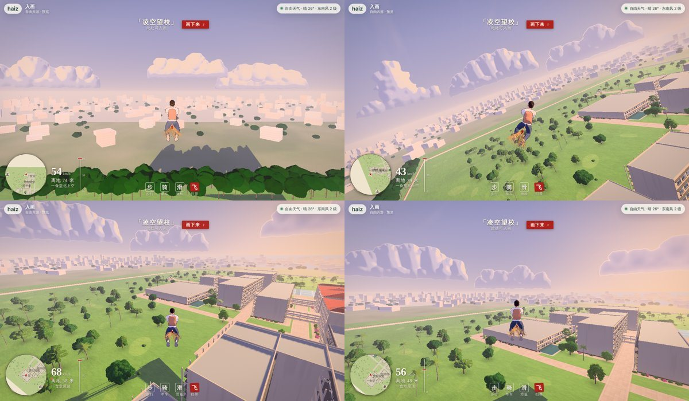
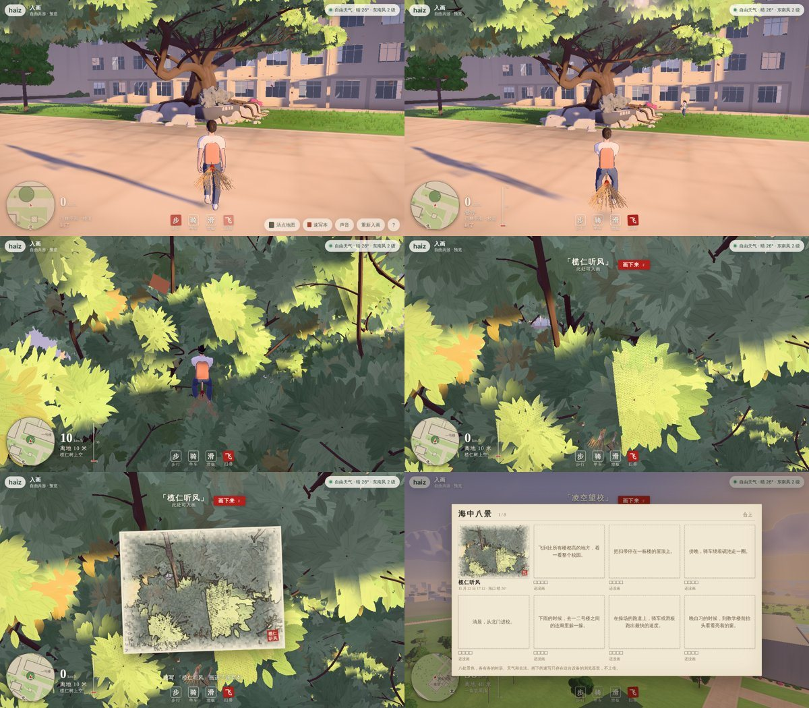
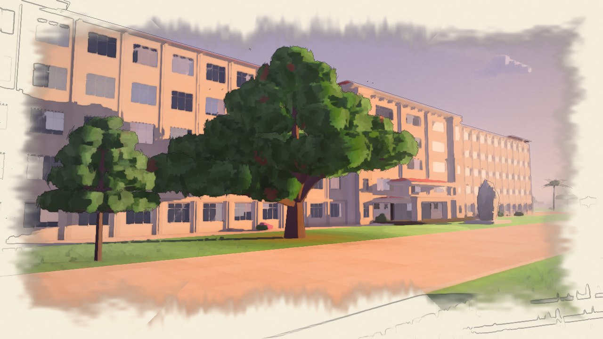
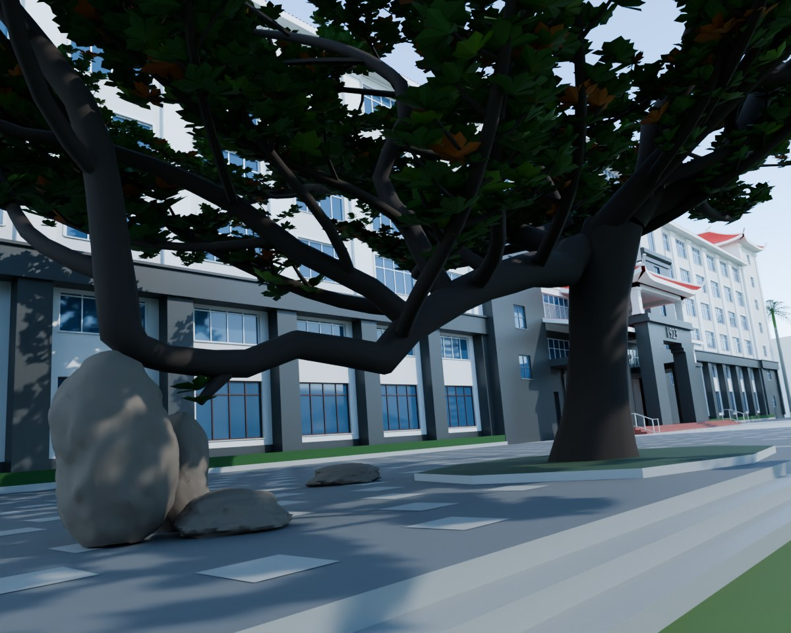
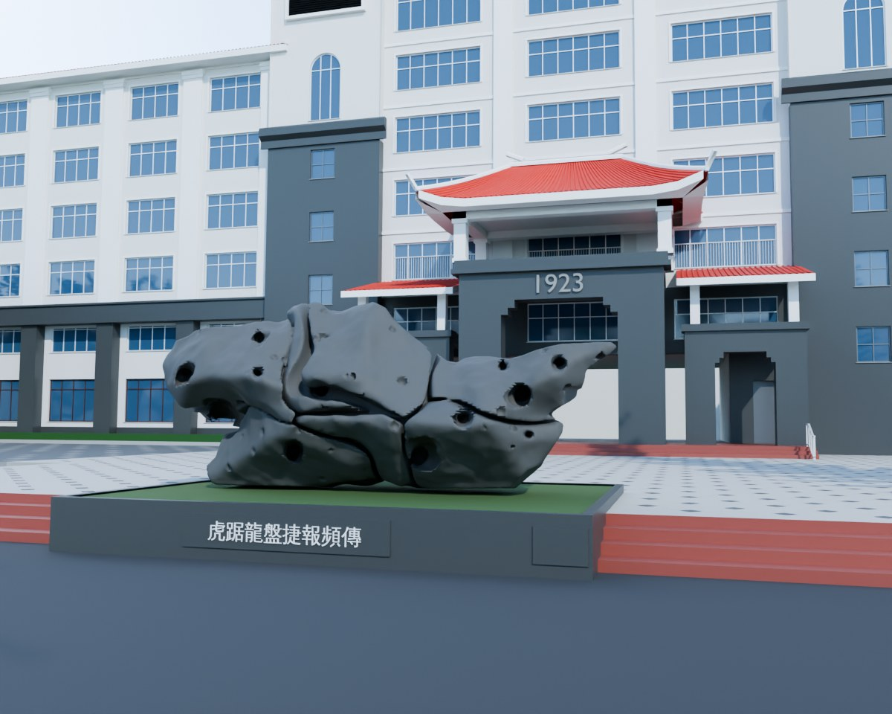

HAIZ · STAGING SHOWCASE · 2026 / 11 / 23
一棵树，
正在成为一所学校。
从一幅树下的画面，到可以回望、可以漫游、可以阅读和创作的数字校园。这里集中展示七条开发成果整合后的阶段样貌。
独立集成分支 · 不是正式版 · 未经完整真机验收 · 榄仁树主页仍是唯一核心入口
01 / THE EXPERIENCE
第六幕，重新学会回望。
新版不再让工具面板占据整棵榄仁树：第五幕与第六幕共享傍晚最后一段光，目录变轻，「入画」成为向前走的主要选择。下面的图片是同一仓库提供的实际 Chromium 软件渲染对照。


02 / INTO THE PAINTING
世界从这里开始，可以自己走。
「入画」维持独立艺术观看；新加入「自由共游」实验路线，包含自行车、滑板、竹扫帚飞行、海中八景速写簿。画境实验室继续保留可开关的绘画层，对比不同光、材料和笔触的表达。

自由共游骑行 / 滑板 / 竹扫帚飞行 · #90

留下自己的视角校园八景 · 风景速写与记录

画境实验室光、材料、空间层次与绘画笔触 · #88
整合状态说明：这三条体验现在共存于同一个版本，但「自由共游」「画境实验室」还没有自动替换第六幕的原地漫游。它们保留独立入口，以免一次集成破坏已有相机与控制权。
03 / PHOTO-GROUNDED TWIN
建筑和树木开始有了真实形状。
两阶段 Blender 数字孪生资产保留源脚本与 GLB：北门、一号教学楼、前庭、榄仁树、太湖石以及校园体量。第二阶段重点校正树的低垂主枝和太湖石，不是简单加面数。

百年榄仁树 · Phase 2重新估计树干与分枝位置，低枝按多特征照片投影构造

一号教学楼 · Phase 2屋顶、立面、门廊和真实空间关系的持续重建
注意：这些模型是有照片与数据依据的近似重建，不是学校官方一比一实测。当前高精度 GLB 仍是独立资产，尚未在第六幕中替换所有旧校园建筑。
04 / ENGINEERING
看不见的部分，也在进步。
7条主要成果分支在此合流
25校园数据专项测试的已记录通过数
3体验方向：六幕 / 入画与共游 / 真实模型
- #89 · 自动验收系统浏览器、移动兼容、必测项目不能跳过
- #87 · 空间真实性审计检查数据一致性；不是现场测绘认证
- #91 · 手机渲染优化环境资源复用与树叶/场景计算优化；真实 GPU 待验收
- #92 · 校园数字孪生高精度 Blender 源文件、五份 GLB 及证据
- #88 · 画境实验室对比不同绘画渲染层，保留独立美术实验
- #90 · 自由共游载具、路线、速写与交互；真机试玩待确认
- #93 · 艺术总导演第一轮06 回望、入画主入口、部分页面回程衔接
这是一份阶段性集成快照。代码已在集成分支合并，发布到主分支与真机/跨模块联合验收是另外两件事。某些 PR 原先的 CI 红灯来自未合并的旧测试，必须以本次组合后的新 CI 结果为准。